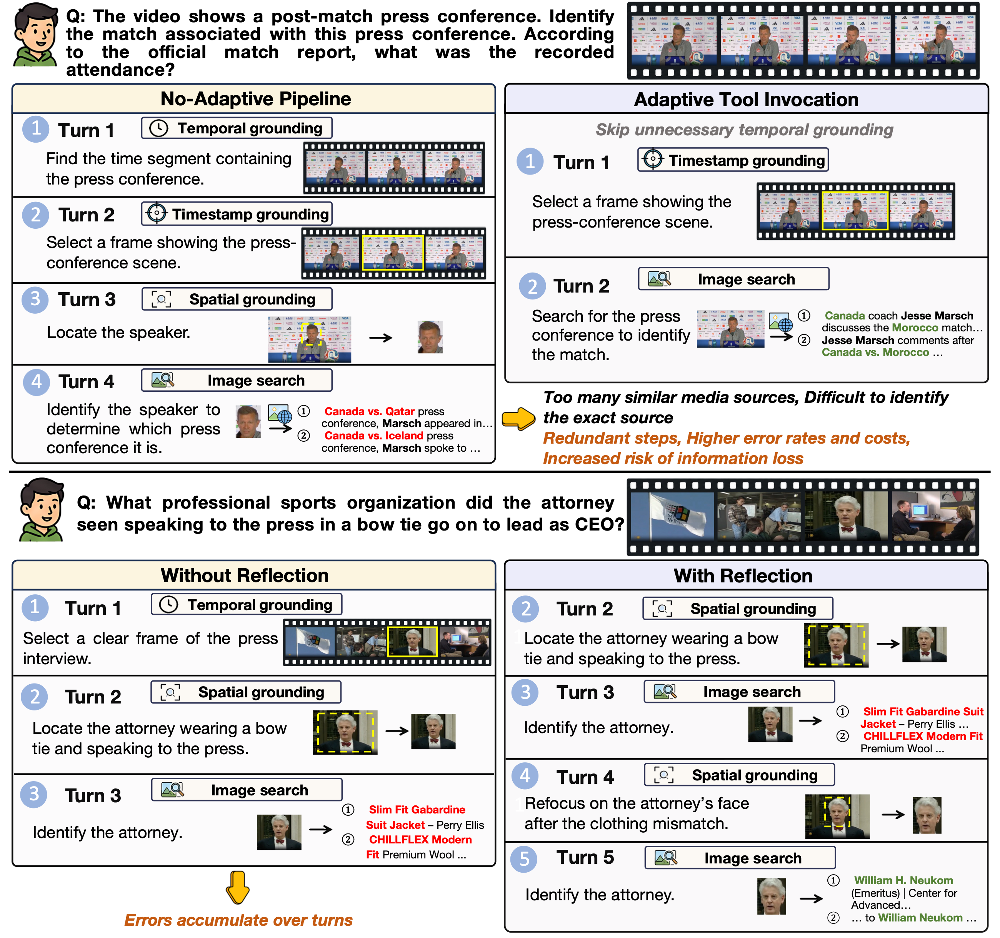
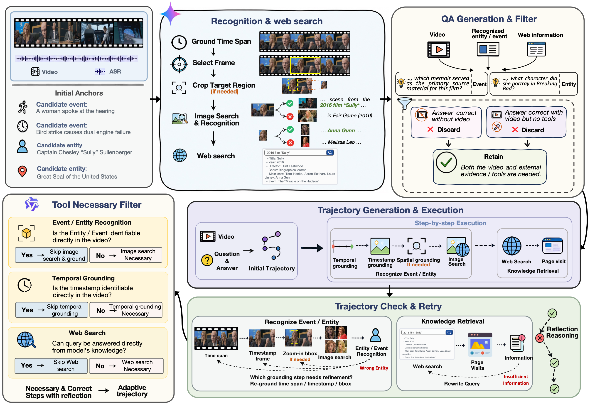
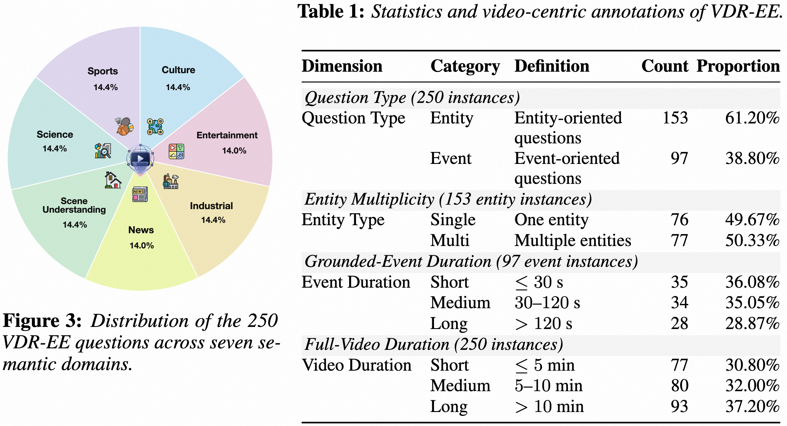
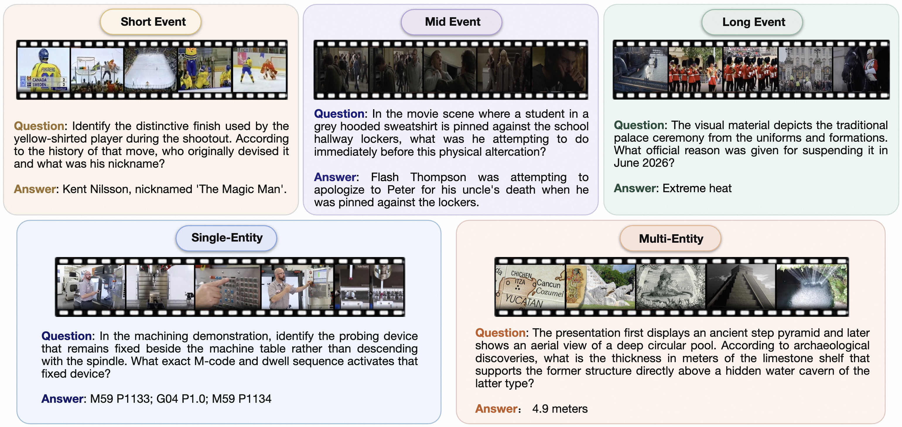
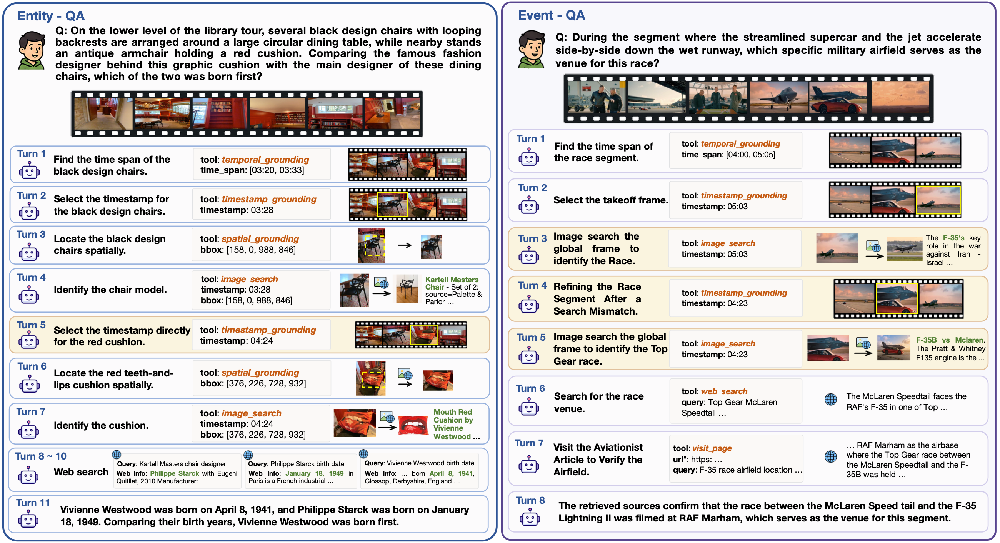

Adaptive Tool Invocation
Select temporal, timestamp, spatial, image, or web tools on demand. Skip a step whenever the answer is already supported.
Accio Lab Research
1Accio Team, Alibaba Group
2Beijing Key Laboratory of Intelligent Information Technology, School of Computer Science & Technology, Beijing Institute of Technology
*Equal contribution · †Corresponding authors
⌄accuracy on VideoDR
over the 8B base agent
manually verified VDR-EE questions
diverse semantic domains
In brief
Video deep research answers complex questions by jointly understanding video content and retrieving external knowledge from the open Web. Yet, different questions demand substantially different reasoning trajectories, while uncertain grounding and retrieval results can trigger redundant tool calls and compound errors.
We introduce AdaVDR, an adaptive video deep research agent with adaptive tool invocation and adaptive reflection. The agent chooses tools according to the question, its video understanding ability, internal knowledge, and accumulated evidence. When evidence is unreliable, it selectively backtracks to repair the responsible grounding or retrieval step.
We further develop a data construction and training pipeline with model-conditioned tool necessity filtering, supervised fine-tuning, and reinforcement learning with a redundancy-aware reward.

Method
AdaVDR constructs a variable-length trajectory for every question and only invokes another tool when the current evidence is insufficient.
Select temporal, timestamp, spatial, image, or web tools on demand. Skip a step whenever the answer is already supported.
Detect irrelevant or inconsistent evidence, identify the faulty step, and resume reasoning from a revised decision.
Combine verified SFT trajectories with an RL reward that preserves correctness while discouraging needless calls.
Data Engine
Starting from diverse videos and their ASR, our pipeline discovers retrieval-relevant entities and events and follows two task-specific evidence-acquisition paths.
Locate the target with temporal, timestamp, and spatial grounding; identify it through image search; then retrieve the external attributes needed to answer the question.
Discover retrieval-relevant temporal events encoded in the video, localize their time spans, select representative visual evidence, recognize the event or scenario, and retrieve related external knowledge.
Only QA pairs requiring both video evidence and external knowledge are retained. Their evidence paths are converted into executable trajectories, checked and retried when necessary, then simplified by model-conditioned tool necessity filtering.

VDR-EE Benchmark
VDR-EE contains 250 manually verified questions. Every question refers to an identifiable entity or event in the video, requires both video evidence and external knowledge, is unambiguous, and has a reference answer supported by retrieved evidence.
Questions span seven domains: culture, entertainment, industry, news, scene understanding, science, and sports.
Questions are grouped as entity-centric or event-centric, then analyzed by entity multiplicity, grounded-event duration, and full-video duration.


Main Results
Both AdaVDR variants consistently improve their corresponding agentic base models on VDR-EE and VideoDR.
VideoDR
51.0%+21.0 pp over baseVDR-EE · 8B
38.4%+10.0 pp over baseVDR-EE · 9B
47.6%+7.6 pp over baseVideoDR · 9B
56.0%+19.0 pp over baseAcross evaluated baselines, enabling tool interaction improves accuracy by 16.0–30.4 percentage points on VDR-EE.
AdaVDR outperforms its agentic base model across all seven VDR-EE domains.
Event questions use less spatial grounding, while multi-entity questions require longer, grounding-intensive trajectories.
Accuracy (%) by entity type and target-event duration under the agentic setting.
| Model | Entity | Event | Avg. | |||||
|---|---|---|---|---|---|---|---|---|
| Single | Multi | Overall | Short | Medium | Long | Overall | ||
| Direct | ||||||||
| Proprietary models | ||||||||
| Gemini-3.1-Pro | 56.58 | 28.57 | 42.48 | 54.29 | 55.88 | 50.00 | 53.61 | 46.80 |
| Gemini-3-Flash | 42.11 | 22.08 | 32.03 | 51.43 | 61.76 | 46.43 | 53.61 | 40.40 |
| GPT-5.4 | 35.53 | 23.38 | 29.41 | 28.57 | 41.18 | 39.29 | 36.08 | 32.00 |
| Open-source models | ||||||||
| Qwen3-VL-8B-Instruct | 21.05 | 5.19 | 13.07 | 8.57 | 14.71 | 10.71 | 11.34 | 12.40 |
| Qwen3-VL-32B-Instruct | 30.26 | 9.09 | 19.61 | 8.57 | 14.71 | 14.29 | 12.37 | 16.80 |
| Qwen3.5-9B | 23.68 | 11.69 | 17.65 | 5.71 | 2.94 | 7.14 | 5.15 | 12.80 |
| Qwen3.5-35B-A3B | 32.89 | 9.09 | 20.92 | 11.43 | 5.88 | 7.14 | 8.25 | 16.00 |
| Agentic | ||||||||
| Proprietary models | ||||||||
| Gemini-3.1-Pro | 73.68 | 50.65 | 62.09 | 71.43 | 64.71 | 67.86 | 68.04 | 64.40 |
| Gemini-3-Flash | 64.47 | 40.26 | 52.29 | 68.57 | 82.35 | 60.71 | 71.13 | 59.60 |
| GPT-5.4 | 59.21 | 40.26 | 49.67 | 54.29 | 61.76 | 57.14 | 57.73 | 52.80 |
| Open-source models | ||||||||
| Qwen3-VL-8B-Instruct | 42.11 | 22.08 | 32.03 | 22.86 | 26.47 | 17.86 | 22.68 | 28.40 |
| Qwen3-VL-32B-Instruct | 60.53 | 32.47 | 46.41 | 22.86 | 32.35 | 17.86 | 24.74 | 38.00 |
| Qwen3.5-9B | 56.58 | 28.57 | 42.48 | 34.29 | 32.35 | 42.86 | 36.08 | 40.00 |
| Qwen3.5-35B-A3B | 56.58 | 38.96 | 47.71 | 42.86 | 52.94 | 35.71 | 44.33 | 46.40 |
| AdaVDR-8B | 53.95 | 28.57 | 41.18 | 31.43 | 32.35 | 39.29 | 34.02 | 38.40 |
| Δ vs. Qwen3-VL-8B | +11.84 | +6.49 | +9.15 | +8.57 | +5.88 | +21.43 | +11.34 | +10.00 |
| AdaVDR-9B | 57.89 | 32.47 | 45.10 | 48.57 | 58.82 | 46.43 | 51.55 | 47.60 |
| Δ vs. Qwen3.5-9B | +1.32 | +3.90 | +2.61 | +14.29 | +26.47 | +3.57 | +15.46 | +7.60 |
Accuracy (%) across six knowledge domains under the agentic setting.
| Model | History | Geography | Culture | Economy | Technology | Daily Life | Avg. |
|---|---|---|---|---|---|---|---|
| Workflow | |||||||
| Proprietary models | |||||||
| Gemini-3-Pro-Preview | 72.73 | 70.00 | 80.00 | 62.50 | 64.29 | 69.70 | 69.00 |
| GPT-4o | 63.64 | 40.00 | 33.33 | 43.75 | 42.86 | 39.39 | 42.00 |
| GPT-5.2 | 72.73 | 70.00 | 80.00 | 56.25 | 64.29 | 72.73 | 69.00 |
| Open-source models | |||||||
| Qwen3-Omni-30B-A3B | 36.36 | 30.00 | 26.67 | 43.75 | 50.00 | 36.36 | 37.00 |
| InternVL3.5-14B | 9.09 | 50.00 | 20.00 | 25.00 | 21.43 | 30.30 | 27.00 |
| MiniCPM-V 4.5 | 27.27 | 10.00 | 46.67 | 25.00 | 14.29 | 24.24 | 25.00 |
| Qwen3-VL-8B-Instruct | 36.36 | 30.00 | 33.33 | 31.25 | 33.33 | 18.18 | 28.00 |
| Qwen3-VL-32B-Instruct | 45.45 | 40.00 | 46.67 | 50.00 | 26.67 | 24.24 | 36.00 |
| Qwen3.5-9B | 54.55 | 20.00 | 26.67 | 50.00 | 33.33 | 30.30 | 35.00 |
| Qwen3.5-35B-A3B | 63.64 | 20.00 | 26.67 | 56.25 | 40.00 | 33.33 | 39.00 |
| Agentic | |||||||
| Proprietary models | |||||||
| Gemini-3-Pro-Preview | 81.82 | 50.00 | 86.67 | 68.75 | 85.71 | 78.79 | 76.00 |
| GPT-4o | 63.64 | 20.00 | 53.33 | 50.00 | 35.71 | 39.39 | 43.00 |
| GPT-5.2 | 90.91 | 70.00 | 73.33 | 56.25 | 71.43 | 66.67 | 69.00 |
| Open-source models | |||||||
| Qwen3-Omni-30B-A3B | 54.55 | 40.00 | 26.67 | 43.75 | 35.71 | 33.33 | 37.00 |
| InternVL3.5-14B | 36.36 | 40.00 | 26.67 | 31.25 | 28.57 | 24.24 | 30.00 |
| MiniCPM-V 4.5 | 9.09 | 10.00 | 26.67 | 12.50 | 14.29 | 18.18 | 16.00 |
| Qwen3-VL-8B-Instruct | 36.36 | 40.00 | 33.33 | 31.25 | 33.33 | 21.21 | 30.00 |
| Qwen3-VL-32B-Instruct | 63.64 | 40.00 | 46.67 | 37.50 | 40.00 | 24.24 | 38.00 |
| Qwen3.5-9B | 54.55 | 20.00 | 40.00 | 43.75 | 33.33 | 33.33 | 37.00 |
| Qwen3.5-35B-A3B | 63.64 | 20.00 | 33.33 | 62.50 | 40.00 | 36.36 | 42.00 |
| Qwen3.5-397B-A13B | 54.55 | 70.00 | 46.67 | 81.25 | 53.33 | 48.48 | 57.00 |
| AdaVDR-8B | 54.55 | 60.00 | 40.00 | 50.00 | 60.00 | 48.48 | 51.00 |
| Δ vs. Qwen3-VL-8B | +18.19 | +20.00 | +6.67 | +18.75 | +26.67 | +27.27 | +21.00 |
| AdaVDR-9B | 63.64 | 60.00 | 53.33 | 62.50 | 60.00 | 48.48 | 56.00 |
| Δ vs. Qwen3.5-9B | +9.09 | +40.00 | +13.33 | +18.75 | +26.67 | +15.15 | +19.00 |
Qualitative Analysis
Entity questions can omit unnecessary grounding; event questions can recover from mismatched retrieval by selecting stronger visual evidence.

Citation
@article{zhang2026adavdr,
title = {AdaVDR: Adaptive Tool Use and Reflection for Video Deep Research},
author = {Zhang, Xintong and Fan, Xiaomeng and Yan, Shilin and He, Xingqi and Liu, Zicheng and Zou, Zijian and Zhang, Guannan and Wu, Yuwei and Gao, Zhi and Xue, Hongwei},
journal = {arXiv preprint arXiv:2604.08545},
year = {2026}
}